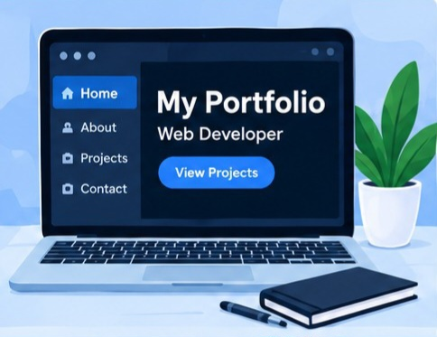

Portofolio Personal Web Developer
Website untuk menampilkan profil, kemampuan, dan hasil project yang pernah saya buat selama belajar pengembangan web.

Tentang Project
Project ini dibuat sebagai tempat untuk memperkenalkan diri dan menampilkan hasil pekerjaan di bidang web development. Website disusun dengan tampilan sederhana agar informasi mudah dibaca dan ditemukan.
Fitur Project
- Halaman profil dan perkenalan diri.
- Daftar kemampuan HTML, CSS, dan JavaScript.
- Daftar proyek yang pernah dibuat.
- Halaman detail untuk setiap proyek.
- Informasi kontak untuk menghubungi pemilik website.
- Tampilan responsif untuk HP dan komputer.
Proses Pembuatan
Pembuatan dimulai dengan menyusun struktur halaman menggunakan HTML, kemudian mengatur warna, jarak, ukuran teks, dan tata letak menggunakan CSS. Setiap bagian disesuaikan agar tetap nyaman digunakan pada berbagai ukuran layar.
Informasi Project
Jenis: Website Portofolio
Bahasa: HTML dan CSS
Status: Dalam Pengembangan